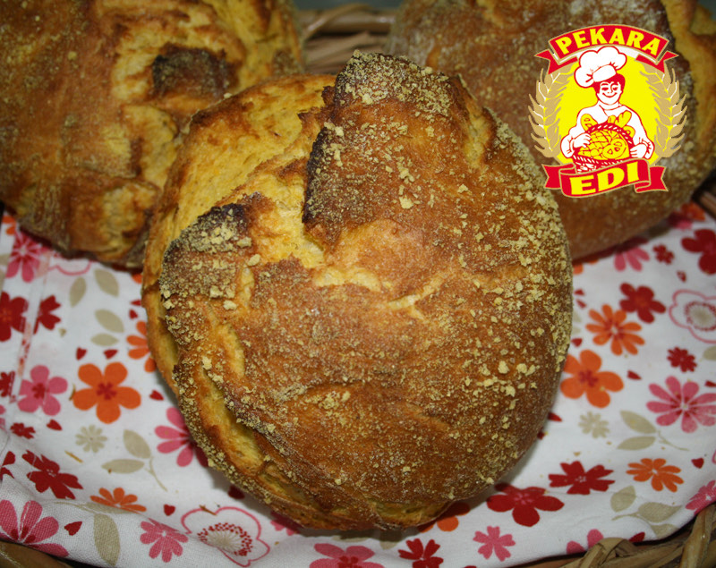
Kruh
500 gIzdvojili smo dio ponude. U poslovnicama vas čeka i puno više, od peciva za doručak do kolača u vitrini.

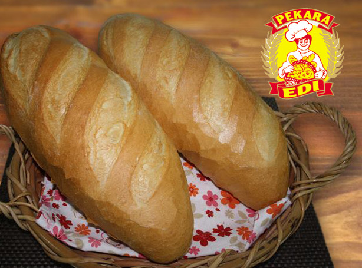
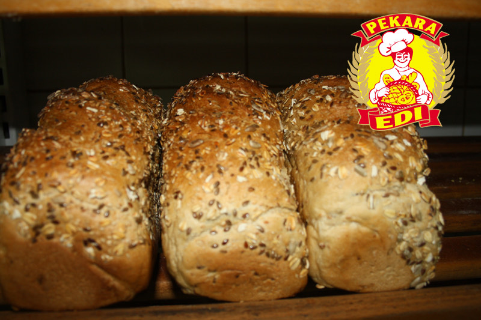
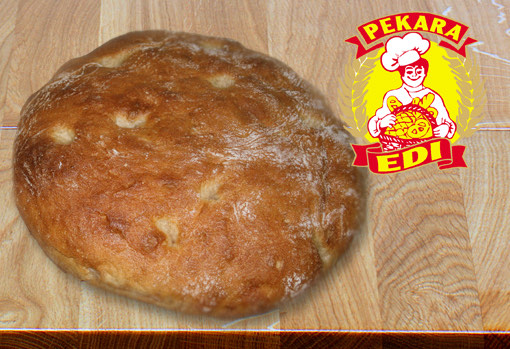
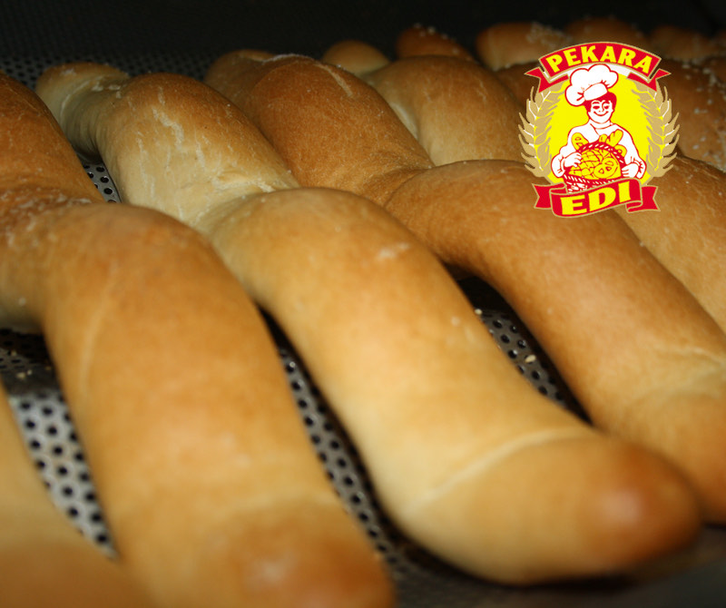
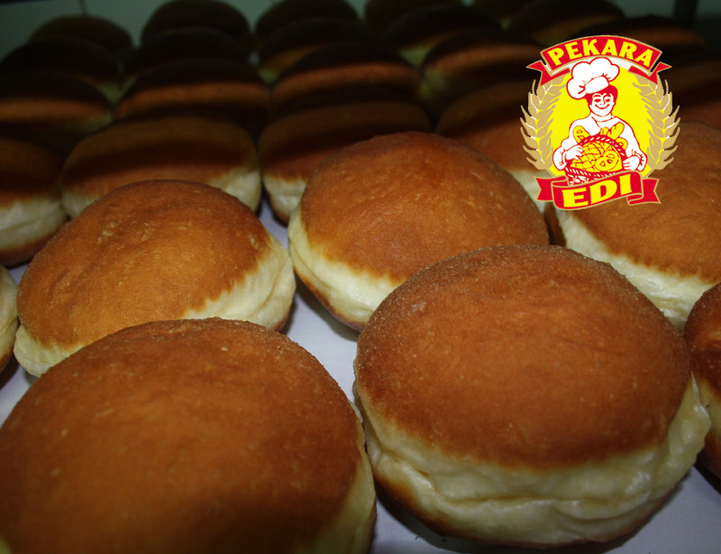
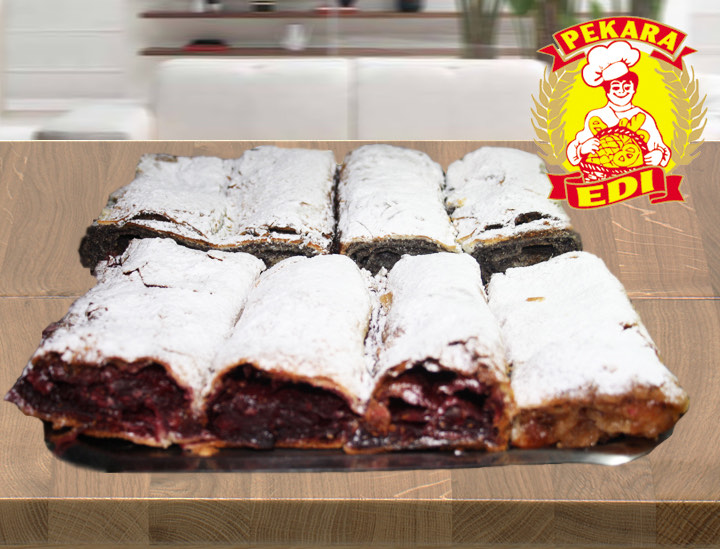
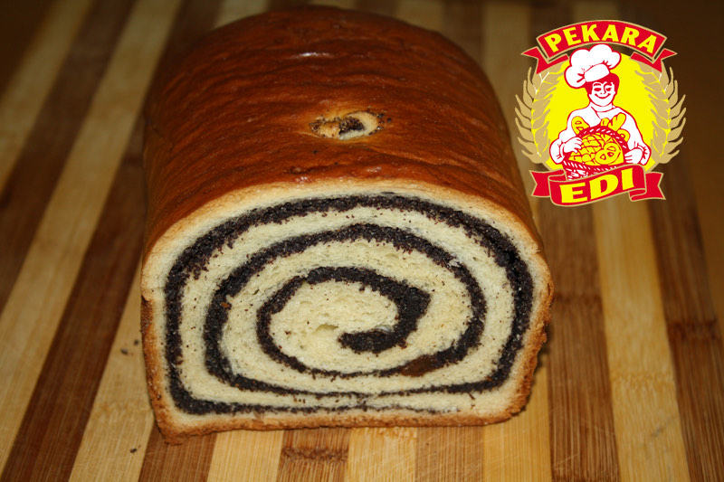

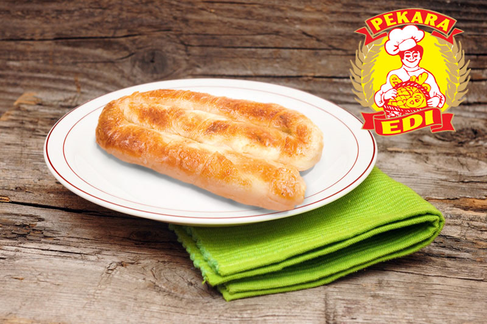
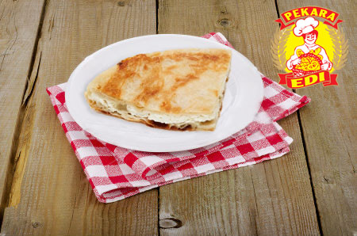
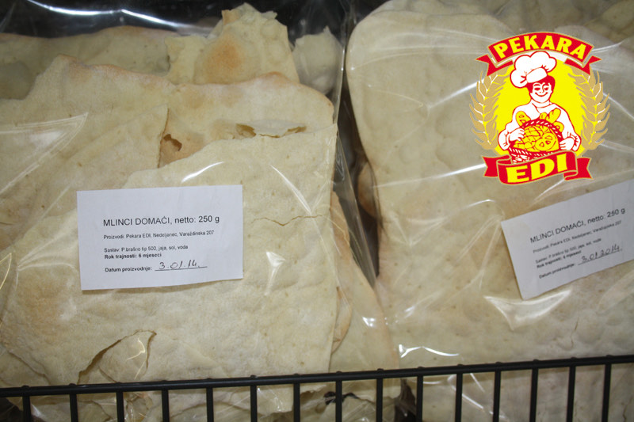
Masa proizvoda prema podacima Pekare Edi. Za cijene i trenutnu ponudu javite se svojoj poslovnici.
Pekara Edi nudi svježe proizvode svaki dan, odlične kvalitete i po povoljnim cijenama. U većini poslovnica nalazi se i naš Lory Bar, gdje uz piće možete naručiti nešto iz pekare.
Svaka poslovnica ima svoj telefon. Poruku iz obrasca šaljete SMS-om izravno odabranoj poslovnici.